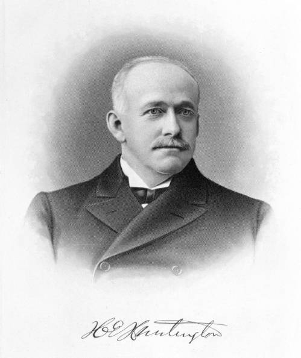

Visit the Huntington Digital Library at
www.hdl.huntington.org
Cristina Mungai, LSC 555, Assignment 1
Dr. Sang Hoo Oh
October 3, 2025
|  | The Huntington Digital Library (HDL) is an online database of digitized manuscripts, books, photographs, and other materials that are part of the larger Huntington Library, Art Museum, and Botanical Gardens. The collection was part of the private estate of Henry Edward Huntington, a railroad magnate (left), and his wife, Arabella Huntington (right). After their marriage in 1913, the Huntingtons amassed a large literary, art, and botanical collections at their home in San Marino, California. The collection is stored in a 96,000-square-foot library built in 1919 by prolific Los Angeles architects Myron Hunt and Elmer Grey. The private holdings became a public nonprofit institution after Henry's death in 1927 via a trust the couple established so that their collection could be used "to promote the public welfare". |
 |
The HDL website identifies its users as Huntington readers, staff, and the community at large. The physical library where these digitized documents and the remainder of the collection are stored is a research library that grants access to about 2,000 scholars. The library building, art museum, and gardens can be toured by visitors who pay for admission. Access to research materials in the library that are not posted on the HDL website is limited to library card holders. In order to obtain a library card, an application stating a valid research purpose must be submitted to the library for approval. As such, the HDL website is the only way for the general public to view items within the Huntington collection. According to the Huntington Library website, the HDL receives 3.7 million views per year.
The Huntington Digital Library is comprised of over 250,000 digital images of materials taken from the approximately 12 million items in the Huntington Library collection. New content is added to the database regularly. Among its many documents, the database consists of manuscripts, reference books, rare books, prints, ephemera, and photographs from the 14 subject areas that are the focus of the Huntington Collection, including:
Among the more notable items in the database are digitized copies of the original handwritten manuscripts of Walden by Henry David Thoreau, handwritten letters from George Washington, Thomas Jefferson, and Abraham Lincoln, and photographs taken by writer, Jack London. More information about the Huntington and the Digital Library is available on The Huntington Fact Sheet.

The Huntington Digital Library provides a very user-friendly way for visitors to explore its large collection of digitized materials. The homepage presents the various collections in a well-organized grid of boxes containing the collection name and a descriptive thumbnail image. Once the user has chosen a collection for viewing by clicking on the corresponding box, they are taken to the collection page which provides detailed information about the collection contents. The user is given the opportunity to browse the entire collection or to narrow their search by clicking on subtopics displayed in a list of links. Search results are displayed on the right-hand side of the screen in a series of boxes similar to the collection boxes on the homepage. Each result includes a thumbnail image of the item, its title, the library call number, and date of creation. Meanwhile, a sidebar on the left side of the screen allows users to refine their search further using multiple filters such as collection type (e.g., manuscript, photograph, map, or printed book), title, date, creator, and subject.
Once an item is selected for viewing, it is displayed prominently at the top of the screen with a detailed description given below. Generally, the description includes the name of the larger collection the item is taken from, its provenance, a library catalogue link, and restrictions on use. In the case of handwritten letters, some of the entries contain transcriptions of the document content. These transcriptions are particularly striking for users new to searching this type of database in the case of letters from figures like George Washington and Abraham Lincoln. All items contained in HDL can be downloaded as JPEG files.
Pros:
Cons:
The Huntington Digital Library is a very well-planned website that provides access to a portion of the impressive holdings of the Huntington Library. The database was easy to search, and the images were of excellent quality. I found myself wanting to learn more about the subjects represented and spending a great deal of time enjoying the content.
The HDL website would benefit greatly from a more prominent placement on the Huntington Library homepage. It would not have been easy to find the HDL webpage without having been provided the URL. In addition to fixing navigation issues, it would be helpful to see more information about current and future digitization projects listed on the HDL website. While the Huntington Fact sheet mentions the considerable number of page views HDL receives annually, the website does little to promote the work being done to digitize new portions of the collection.
Finally, it would be fascinating if the website presented more information about the lives and work of Henry and Arabella Huntington during the Gilded Age and beyond. The collection is captivating, and I would imagine that the story of how it was created is equally compelling.
Library Building, South Facade [Photograph]. (ca. 1922-1923). Henry E. Huntington Estate Photograph Collection (photCL 107 fld24(20)). The Huntington Library, San Marino, CA.
Portrait of Henry E. Huntington [Photograph]. Henry Edward Huntington Papers, 1640-1994 (mssHEH 61/3/3(8)). The Huntington Library, San Marino, CA.
Arabella Huntington Wearing Pearls [Photograph]. Henry Edward Huntington Papers, 1640-1994 (mssssHEH 61/2/2). The Huntington Library, San Marino, CA.
The Huntington to revitalize historic library building and transform library and art museum collaboration. (2025, June 24). https://www.huntington.org/news/huntington-revitalize-historic-library-building-and-transform-library-and-art-museum.